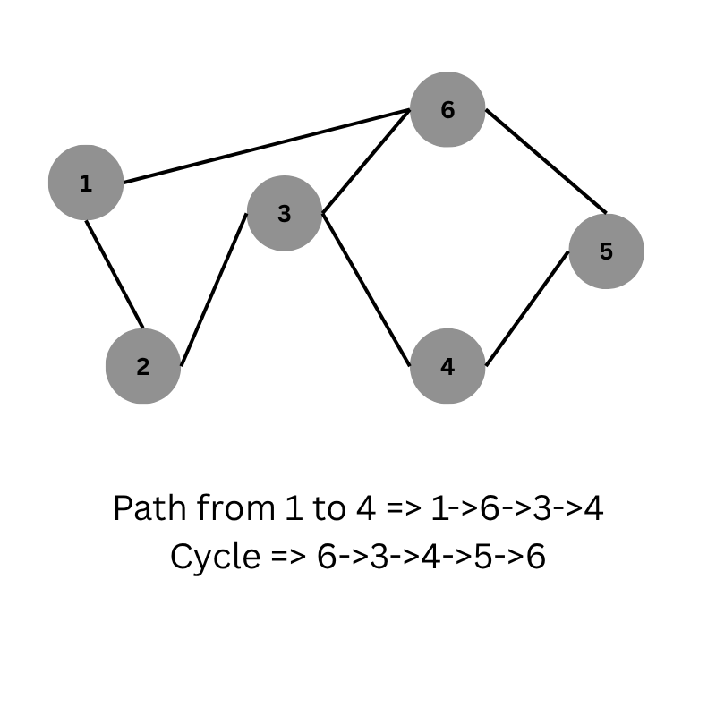
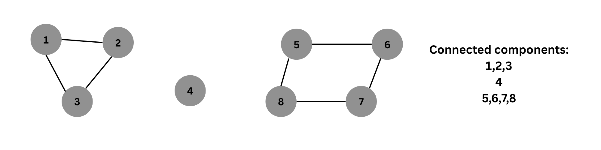

Graphs are data structures consisting of nodes (also called vertices) and edges. They are used to model and solve problems involving objects and the relationships between them.
Path is a sequence of distinct vertices between node a and b. A path is called cycle if the first and last node is the same. Example:
The connected parts of a graph are called its components. If a graph has only one component, it is called a connected graph.

In a graph, every node X is associated with an adjacency list that contains all nodes it is directly connected to (i.e., its neighbors).
For a directed graph, an edge from node u to node v is represented by adding v to the adjacency list of u.
Here's an example:
vector<int> adj[N]; // N is the number of nodes
adj[1].push_back(2); // Edge from 1 to 2
adj[2].push_back(3); // Edge from 2 to 3
adj[2].push_back(4); // Edge from 2 to 4
For undirected graph => adjacency list will be in both directions [i] = {j} and [j] = {i}. For weighted edges, we can use the following:
vector<pair<int, int>> adj[N]; // N is the number of nodes
adj[1].push_back({2,5}); // Edge from 1 to 2 of weight 5
adj[2].push_back({3,6}); // Edge from 2 to 3 of weight 6
adj[2].push_back({4,1}); // Edge from 2 to 4 of weight 1
stores which nodes have edges between them in form of a matrix.
int adj[N][N];
adj[2][3] = 5; //Edge from 2 to 3 of weight 5
adj[6][2] = 3; //Edge from 6 to 2 of weight 3
Stores edges in the form of pair of numbers representing nodes. Example:
vector<pair<int, int>> edges;
edges.push_back({2,3});// edge between 2 and 3 nodes
edges.push_back({3,4});// edge between 3 and 4 nodes
edges.push_back({4,1});// edge between 4 and 1 nodes
If the nodes are weighted then we can expand pair to tuple and store weight in the last index. Example:
vector<tuple<int, int, int>> edges;
What happens when vertex labels are not labelled from 0 to n-1 or label is not a number all toghether??, Suppose labels are strings, then we can use a map to store the index of each vertex. Example: unordered_map<string, vector<string>> adj;